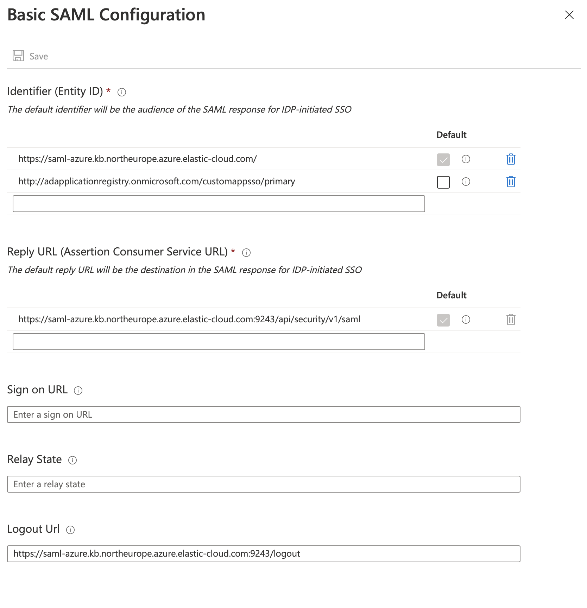

Set up SAML with Azure Active Directoryedit
This guide provides a walk-through of how to configure Azure Active Directory (AD) as an identity provider for SAML single sign-on (SSO) authentication, used for accessing Kibana and Enterprise Search in Elasticsearch Service.
Use the following steps to configure SAML access to Kibana and/or Enterprise Search:
For more information about SAML configuration, you can also refer to:
Configure SAML with Azure AD to access Kibanaedit
Follow these steps to configure SAML with Azure Active Directory as an identity provider to access Kibana.
-
Configure the Azure Identity Provider:
- Log in to the Azure Portal and navigate to Azure Active Directory.
- Click Enterprise applications and then New application to register a new application.
-
Click Create your own application, provide a name, and select the Integrate any other application you don’t find in the gallery option.

-
Navigate to the new application, click Users and groups, and add all necessary users and groups. Only the users and groups that you add here will have SSO access to the Elastic stack.

-
Navigate to Single sign-on and edit the basic SAML configuration, adding the following information:
-
Identifier (Entity ID)- a string that uniquely identifies a SAML service provider. We recommend using your Kibana or Enterprise Search URL, but you can use any identifier.For example,
https://saml-azure.kb.northeurope.azure.elastic-cloud.com:9243. -
Reply URL- This is the Kibana URL with/api/security/saml/callbackappended.For example,
https://saml-azure.kb.northeurope.azure.elastic-cloud.com:9243/api/security/saml/callback. -
Logout URL- This is the Kibana URL with/logoutappended.For example,
https://saml-azure.kb.northeurope.azure.elastic-cloud.com:9243/logout.
-
-
Navigate to SAML-based Single sign-on, open the User Attributes & Claims configuration, and update the fields to suit your needs. These settings control what information from Azure AD will be made available to the Elastic stack during SSO. This information can be used to identify a user in the Elastic stack and/or to assign different roles to users in the Elastic stack. We suggest that you configure a proper value for the
Unique User Identifier (Name ID)claim that identifies the user uniquely and is not prone to changes.
-
From the SAML configuration page in Azure, make a note of the
App Federation Metadata URL.
-
Configure Elasticsearch and Kibana for SAML:
- Log in to the Elasticsearch Service Console.
-
Update your Elasticsearch user settings with the following configuration:
xpack.security.authc.realms.saml.kibana-realm: order: 2 attributes.principal: nameid attributes.groups: "http://schemas.microsoft.com/ws/2008/06/identity/claims/groups" idp.metadata.path: "https://login.microsoftonline.com/<Tenant ID>/federationmetadata/2007-06/federationmetadata.xml?appid=<Application_ID>" idp.entity_id: "https://sts.windows.net/<Tenant_ID>/" sp.entity_id: "<Kibana_Endpoint_URL>" sp.acs: "<Kibana_Endpoint_URL>/api/security/saml/callback" sp.logout: "<Kibana_Endpoint_URL>/logout"Where:
-
<Application_ID>`is your Application ID, available in the application details in Azure. -
<Tenant_ID>`is your Tenant ID, available in the tenant overview page in Azure. -
<Kibana_Endpoint_URL>is your Kibana endpoint, available from the Elasticsearch Service console. Ensure this is the same value that you set forIdentifier (Entity ID)in the earlier Azure AD configuration step.Note that for
idp.metadata.pathwe’ve shown the format to construct the URL, but this should be identical to theApp Federation Metadata URLsetting that you made a note of in the previous step.Remember to add this configuration for each node type in your user settings if you use several node types based on your deployment architecture (Dedicated Master, High IO, and/or High Storage).
-
-
Next, configure Kibana in order to enable SAML authentication:
- Log in to the Elasticsearch Service Console.
-
Update your Kibana user settings with the following configuration:
xpack.security.authc.providers: saml.kibana-realm: order: 0 realm: kibana-realm description: "Log in with Azure AD"The configuration values used in the example above are:
-
xpack.security.authc.providers -
Add
samlprovider to instruct Kibana to use SAML SSO as the authentication method. -
xpack.security.authc.providers.saml.<provider-name>.realm -
Set this to the name of the SAML realm that you have used in your Elasticsearch realm configuration. For this example, use the realm name that you configured in the previous step:
kibana-realm.
-
-
Create a role mapping.
The following role mapping for SAML SSO restricts access to a specific user
(email)based on theattributes.principalemail address. This prevents other users on the same domain from having access to your deployment. You can remove the rule or adjust it at your convenience.POST /_xpack/security/role_mapping/SAML_kibana { "enabled": true, "roles": [ "superuser" ], "rules" : { "all" : [ { "field" : { "realm.name" : "kibana-realm" } }, { "field" : { "username" : [ "<firstname.lastname>" ] } } ] }, "metadata": { "version": 1 } }For more information, refer to Configure role mapping in the Elasticsearch SAML documentation.
Configure SAML with Azure AD to access Enterprise Search (versions 7.x and earlier)edit
The following instructions only apply to Enterprise Search versions 7.x and earlier, which used a standalone UI. Since 8.0 Enterprise Search uses Kibana as its user interface.
-
The initial steps to configure SAML with Azure AD to access Enterprise Search are similar to the earlier steps for the prior steps for Kibana except that the Enterprise Search URL is used instead of the Kibana URL in the Azure configuration. Follow those steps first to configure the Azure Identity Provider, using your Enterprise Search URL as shown.

-
After you have configured the Azure Identity Provider, proceed with the following steps to configure Elasticsearch and Enterprise Search for SAML:
- Log in to the Elasticsearch Service Console.
-
Update your Elasticsearch user settings with the following configuration:
xpack.security.authc.realms.saml.enterprise-search-realm: order: 3 attributes.principal: "http://schemas.xmlsoap.org/ws/2005/05/identity/claims/emailaddress" attributes.groups: "http://schemas.microsoft.com/ws/2008/06/identity/claims/groups" idp.metadata.path: "https://login.microsoftonline.com/<Tenant ID>/federationmetadata/2007-06/federationmetadata.xml?appid=<Application_ID>" idp.entity_id: "https://sts.windows.net/<Tenant_ID>/" sp.entity_id: "https://<Random_String>" sp.acs: "<Enterprise_Search_URL>/api/security/v1/saml" sp.logout: "<Enterprise_Search_URL>/logout"Where:
-
<Application_ID>`is your Application ID, available in the application details in Azure. -
<Tenant_ID>`is your Tenant ID, available in the application details in Azure. -
<Enterprise_Search_URL>is your Enterprise Search endpoint, available from the Elasticsearch Service console. Ensure this is the same value that you set forIdentifier (Entity ID)in the earlier Azure AD configuration step.Remember to add this configuration for each node type in your user settings if you use several node types based on your deployment architecture (Dedicated Master, High IO, and/or High Storage).
Note that for
idp.metadata.pathwe’ve shown the format to construct the URL, but this should be identical to theApp Federation Metadata URLsetting that you made a note of in the previous step.
-
-
Next, configure Enterprise Search in order to enable SAML authentication:
- Log in to the Elasticsearch Service Console.
-
Update your Enterprise Search user settings with the following configuration:
ent_search.auth.ent-search-realm.source: elasticsearch-saml ent_search.auth.ent-search-realm.order: 1 ent_search.auth.ent-search-realm.description: "SAML login" ent_search.auth.ent-search-realm.icon: "https://my-company.org/company-logo.png"
You should now have successfully configured SSO access to both Kibana and Enterprise Search with Azure AD as the identity provider.